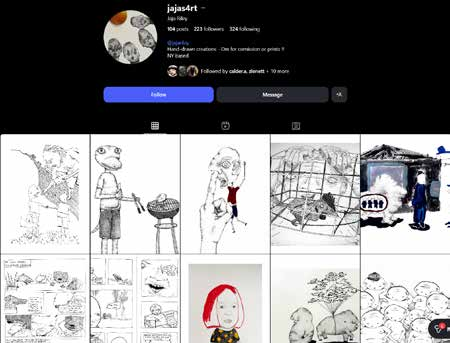
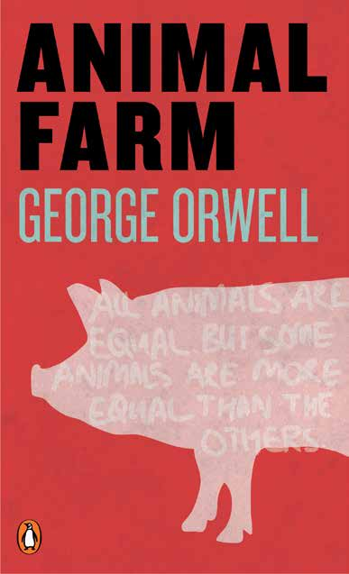
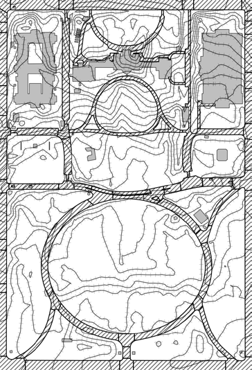
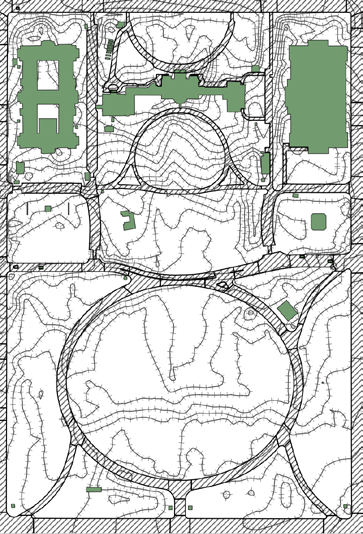
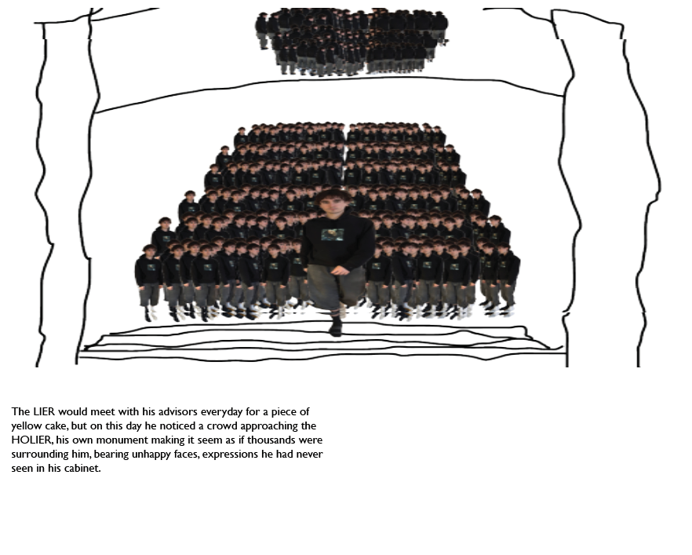
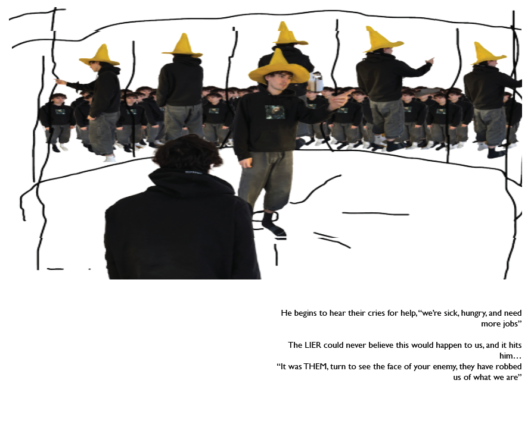
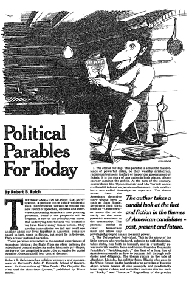

The Book
Read ReflectUS, spread by spread

1 / 19
The Book
1 / 19
Political Project · Book
A political project and a book, inspired by Robert Reich. A children’s book style story that mocks the cyclical nature of the American government, a culture failing to self reflect and so forced to repeat the same patterns.
The Project
ReflectUS is a political project and a book, inspired by Robert Reich.
An essay from the mid 1980s outlines four groups that politicians use to categorize and frame the stories they tell about the American people.
ReflectUS is a children’s book style story that mocks the cyclical nature of the American government, a culture failing to self reflect and thus forced to repeat the same patterns.
If the project truly resonates, voters can walk away with the tool to make decisions that truly benefit them, not harm others.
America’s Four Stories
There are four essential American stories. The first two are about hope, the second two are about fear.
The tale of the little guy who works hard, takes risks, believes in himself, and eventually gains wealth, fame, and honor. Self-made people who buck the odds, spurn the naysayers, and show what can be done with enough gumption and guts, plainspoken and self-reliant underdogs who make it through hard work and faith in themselves. The same theme runs through Horatio Alger’s hundred-odd novellas, whose heroes all rise from rags to riches. The moral is that with enough effort and courage, anyone can make it in the United States.
The story of neighbors and friends who roll up their sleeves and pitch in for the common good. The same communitarian and religious images were used by the abolitionists, suffragettes, and civil-rights activists of the 1950s and 1960s. “I have a dream that every valley shall be exalted, every hill and mountain shall be made low,” said Martin Luther King Jr., extolling the ideal of the national community.
The United States as a beacon of virtue in a world of darkness, uniquely blessed but continuously endangered by foreign menaces. It animates modern epics about space explorers battling alien creatures, and gave special force to Cold War tales of an international plot to undermine U.S. democracy, and later of “evil” empires and axes. The lesson is that we must maintain vigilance, lest diabolical forces overwhelm us.
The malevolence of powerful elites, a tale of corruption, decadence, and conspiracy against the common citizen. It started with King George III and, to this day, shapes the way we view government, mostly with distrust. It inspired what historian Richard Hofstadter called the paranoid style in U.S. politics, from the pre-Civil-War Know-Nothings and Anti-Masonic movements through the Ku Klux Klan and Senator Joseph McCarthy’s witch hunts.


Details
Mapping the Story
The narrative is staged across a single site read three ways, the Castle, the Town, and the Mirror, mapping where each beat of the story takes place.


Rockwell Layout
Adapting a technique Norman Rockwell used to lay out his paintings, I photographed myself and blocked the story out, scene by scene.


Case Analysis
Robert Reich, political economist, Ivy professor, and former U.S. Secretary of Labor, analyzed campaigns and the shifting narratives woven through the American political tapestry. His four parables map directly onto the structure of ReflectUS.
Rot at the Top, malevolence by powerful elites. The Triumphant Individual, the little person who works hard. The Benign Community, neighbors and friends rolling up their sleeves and pitching in. The Mob at the Gates, society coming apart from an excess of democratic permissiveness.

Ronald Reagan, the 40th President of the United States, began his second election cycle in 1986, reshaping the era’s prevailing opinions on social topics, the backdrop against which these parables were sharpened.
Sources
Plus 90 additional cited sources.
“A culture failing to self reflect is forced to repeat the same patterns.”ReflectUS